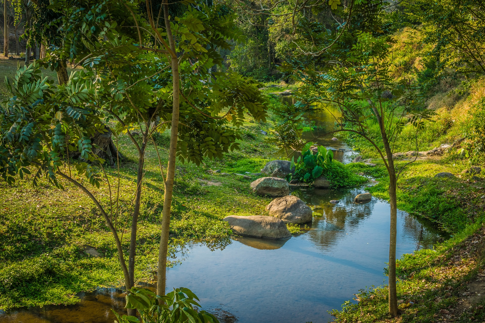
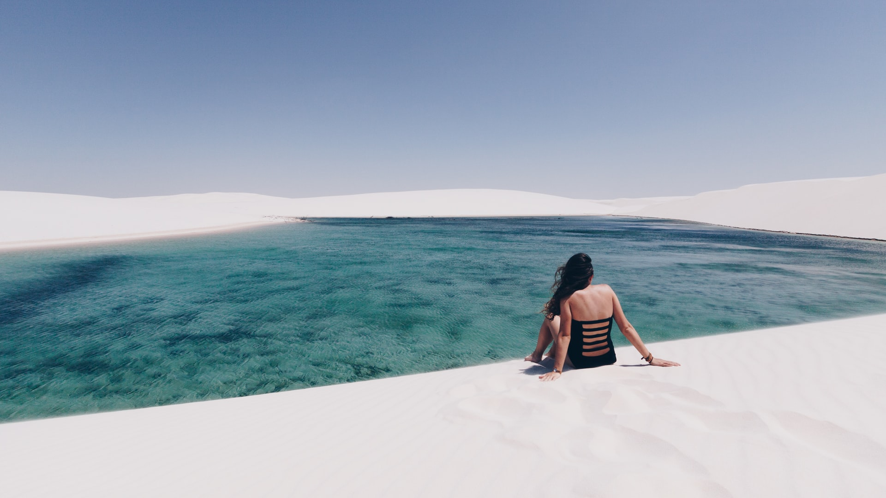
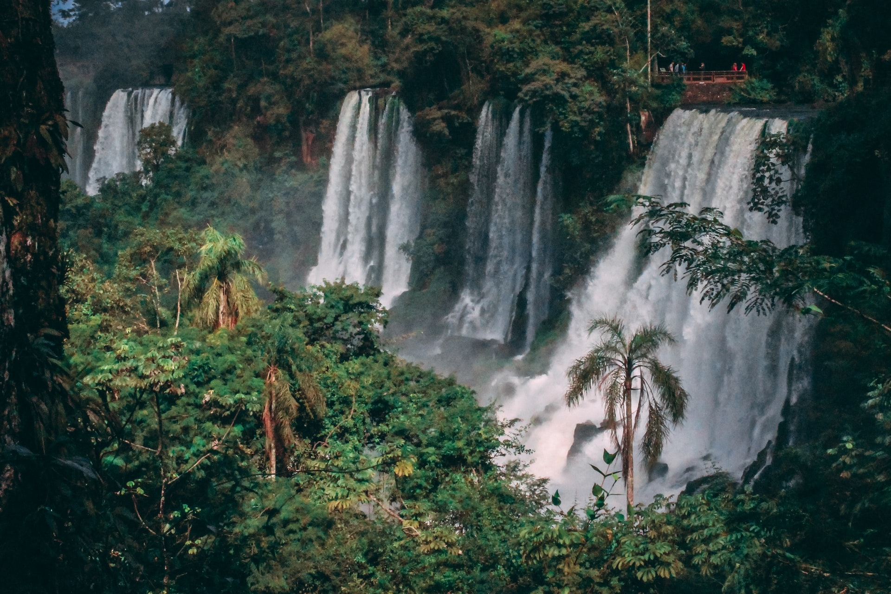

Whether your curiosity is piqued by the International Olympic Committee’s selection for the 2016 Games, or you’re heeding the call of the famous twin beaches Copacabana and Ipanema, Rio offers more than you can imagine, and offers it at all hours. With breathtaking views from Corcovado Mountain and breathtaking deals in the city’s endless malls and markets, Rio de Janeiro is a holiday paradise, whatever it is you travel for.

Brazil's second-oldest national park, created in 1939, protects one of South America's most magical and majestic sights, Iguaçu Falls, part of the largest waterfall system in the world. The 1200m-long Trilha das Cataratas ('Waterfall Trail') is one of Brazil's best moments – a series of islands cut the river into numerous waterfalls along the path, each sparking one 'wow' moment after another until it all culminates in a magnificent display of Mother Nature's raw power at Garganta do Diabo ('Devil's Throat').
This small aquatic playground in the southwestern corner of Mato Grosso do Sul has few attractions of its own, but the natural resources of the surrounding area are spectacular, and local authorities have taken the high road in their regulation and maintenance. There are caves with lakes and amazing stalactite formations, beautiful waterfalls and incredibly clear rivers surrounded by lush forest where it’s possible to swim eyeball to eyeball with hundreds of fish.
Once the magnificent capital of Portugal’s New World colony, today Salvador is the pulsating heart of the country’s Afro-Brazilian community. Its brilliantly hued center is a living museum of 17th- and 18th-century architecture and gold-laden churches. Wild festivals happen frequently, with drum corps pounding out rhythms against the backdrop of colonial buildings almost daily. Elsewhere in town, a different spirit flows as crowds of religious adherents celebrate and reconnect with African gods at Candomblé ceremonies. In fact, there’s no other place in the world where the culture of those brought as slaves from Africa has been preserved as it has been in Salvador – from music and religion to food, dance and martial-arts traditions.
The name of this 1550 sq km national park refers to its immense expanses of dunes, which look like lençóis (bedsheets) strewn across the landscape; they stretch 70km along the coast and up to 50km inland. Located halfway between São Luís and the Piauí border, it's a spectacular place, especially from about May to September when rain filtered through the sand forms thousands of crystal-clear pools and lakes between the dunes. The lagoons are at their best in June, July and August. The park also includes beaches, mangroves and some interesting fauna, especially turtles and migratory birds.
The fabulous island retreat of Ilha Grande owes its pristine condition to its unusual history. For centuries, the island’s unsavory reputation – first as a pirate's lair, then as a leper colony and penitentiary – kept developers at bay. Consequently, beautiful tropical beaches and virgin Atlantic rainforest (now protected as state parkland) abound, and the island still has only a handful of settlements.